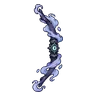
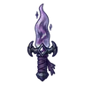
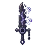
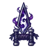
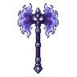
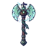
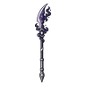
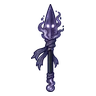
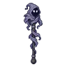
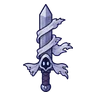

ภูตหมอกเงา
มอนธาตุมืด Lv 72–92
เจอที่
| แมพ | โซน | Lv | ภูมิภาค |
|---|---|---|---|
| ทะเลสาบหมอกเงา | 82–87 | ที่ราบสูง | |
| ทะเลสาบหมอกเงา | ฝั่งเหนือหมอกหนา | 86–90 | ที่ราบสูง |
| เกาะกลางทะเลสาบ | 86–92 | ที่ราบสูง | |
| เกาะกลางทะเลสาบ | หอหินเก่า | 90–92 | ที่ราบสูง |
| หมู่บ้านลอยน้ำร้าง | 72–88 | ที่ราบสูง | |
| หมู่บ้านลอยน้ำร้าง | บ้านแพหลังใหญ่ | 83–88 | ที่ราบสูง |
| ป่าต้นหลิวจมน้ำ | หลิวยักษ์ร้องไห้ | 83–88 | ที่ราบสูง |
| ซากเรือในหมอก | 72–88 | ที่ราบสูง | |
| แนวหินโสโครก | 86–92 | ที่ราบสูง | |
| เกาะประภาคารดับ | 86–92 | ที่ราบสูง | |
| หอรากมืด (Dark Root) | คณะประสานเสียงเงียบ | 62–71 | |
| หอดาวร่วง | ชั้นหอดาวร่วง | 89–99 |
ค่าสถานะตามเลเวล
| Lv | HP | ATK | DEF | MDEF | EXP | Job |
|---|---|---|---|---|---|---|
| 72 | 28,894 | 158–238 | 14 | 26 | 100 | 90 |
| 82 | 42,221 | 186–280 | 16 | 30 | 112 | 101 |
| 92 | 59,174 | 218–328 | 18 | 33 | 125 | 113 |
ตีด้วยธาตุไหนดี
แรงขึ้น: ศักดิ์สิทธิ์ ×1.25
เบาลง: วิญญาณ ×0.75 พิษ ×0.5 มืด ×0 อมตะ ×0
วัตถุดิบที่ดรอป
| ของ | โอกาส | |
|---|---|---|
| ผ้าคลุมหมอกเงา | 50% | 1 ชิ้น (15% ได้ 2) |
อุปกรณ์ที่ดรอป (10)
| ของ | โอกาส |
|---|---|
 ธนูภูตหมอก | 0.12% |
 มีดคู่ภูตหมอกเงา | 0.12% |
 ดาบใหญ่คำสาปจันทร์ดับ | 0.12% |
 คาทาร์กรอบหมอกเงา | 0.12% |
 ขวานยักษ์ภูตหมอก | 0.06% |
 ขวานยักษ์เรือผี | 0.06% |
 หอกยาวง้าวหมอกเงา | 0.06% |
 หอกภูตหมอกเงา | 0.06% |
 คทาภูตหมอกเงา | 0.06% |
 ดาบผ้าคลุมหมอก | 0.06% |
สกิล
วาร์ป (Lv 25+) · วาร์ป (Lv 60+) · ม่านเวท (Lv 60+)